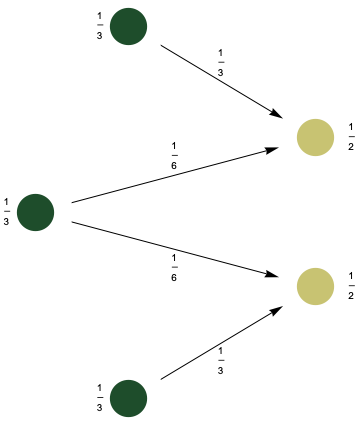
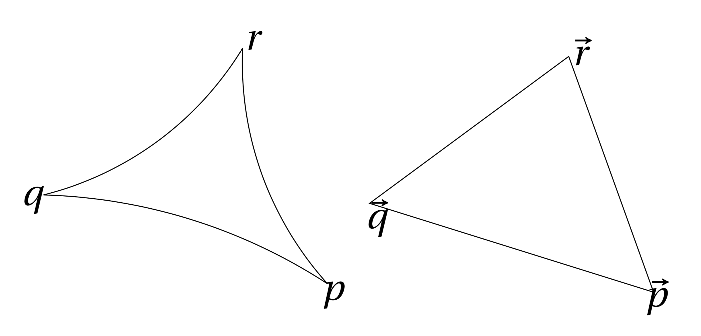
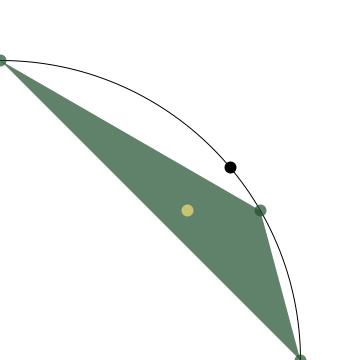

class: center, middle, titlepage count: false # Geodesic Homotopies in Metric Thickenings ### Joshua Mirth (Michigan State University) ## Vietoris-Rips — Tight Span Seminar, January 28, 2020 --- # Motivation: Simplicial Complex Topology Let `\(K\)` be an abstract simplicial complex and `\(|K|\)` its geometric realization. The simplicial complex topology restricts to the discrete topology on the vertex set `\(K^0\)`. * The vertex set of a Vietoris–Rips complex is a metric space which has a metric topology. * If `\(X\)` is a finite metric space, then it carries the discrete topology and so the geometric realization `\(|\mathrm{VR}(X;r)|\)` agrees with the natural topology on the vertices. * If `\(X\)` is not finite, then its metric topology may not be discrete! **Example:** If `\(X = \mathbb{S}^1\)`, then `\(|\mathrm{VR}(X;r)|^0 = \mathrm{VR}(X;0)\)` is an uncountable set of discrete points. One consequence is that the natural inclusion map `\(x \mapsto [x]\)` sending a point `\(x \in X\)` to a vertex in `\(\mathrm{VR}(X;r)\)` is not continuous when `\(X\)` is not discrete. --- # Simplicial Metric Thickenings Idea: Reinterpret simplices as _discrete probability measures_ on `\(X\)`. * In the geometric realization of any simplicial complex, a point in a simplex is specified by barycentric coordinates: if `\(\sigma = [x_0 , \ldots , x_k]\)`, then any `\(x \in \sigma\)` is given by a formal sum `$$ x = \sum_{i=0}^{k} \lambda_{i} x_{i} $$` where `\(\sum \lambda_{i} = 1 \)` and `\(\lambda_i > 0\)` for all `\(i\)`. * Points can therefore be interpreted as probability measures: `$$ \displaystyle \sum_{i=0}^{k} \lambda_{i} x_{i} \iff \sum_{i=0}^{k} \lambda_{i} \delta[x_{i}] $$` where `\(\delta[x_{i}] = \delta_{x_i}\)` is the Dirac measure at `\(x_{i} \in X\)`. --- # Transport Plans Let `\(\mu\)` and `\(\nu\)` be probability measures on `\(X\)`. A _transport plan_ is a measure `\(\pi\)` on `\(X \times X\)` with marginals `\(\mu\)` and `\(\nu\)`: for any measurable `\(A \subseteq X\)`, `$$ \pi(A \times X) = \mu(A) \quad \text{ and } \quad \pi(X \times A) = \nu(A) . $$` Intuition: `\(f : X \to X\)` a function such that `\(f_\#\mu = \nu\)`. Gives a transport plan with `\(\pi = (\mathrm{id}, f)_\#\mu\)`. Not all transport plans come from functions (i.e. a one-to-many operation may be used). There is always at least one transport plan given by the product measure `\(\pi = \mu \otimes \nu\)`. The _cost_ of a transport plan is the amount of mass move times the distance by which it is transported: `$$ \mathrm{cost}(\pi) = \left( \int d(x,y)^2 \, \mathrm{d}\pi \right)^{1/2} . $$` (Other `\(p\)`-norms may also be used.) --- # Wasserstein Space .figuresplit[] .textsplit[The space of all probability measures on `\(X\)`,`\(\mathcal{P}(X)\)`, can be given a topology by defining the Wasserstein distance: `$$ \displaystyle W_2(\mu,\nu) = \inf_{\pi} \left( \int_{X \times X} d(x,y)^2 \, \mathrm{d}\pi \right)^{1/2} $$` where the infimum is taken over all transport plans.] -- .textsplit[ .defn[**Definition:**] The **Vietoris–Rips metric thickening**, `\(\mathcal{VR}(X;r)\)`, consists of all measures on `\(X\)` corresponding to points in simplices in `\(\mathrm{VR}(X;r)\)`. * Observe that `\(W_2(\delta[x_0],\delta[x_1]) = d(x_0,x_1)\)`, so the inclusion `\(\delta \colon X \to \mathcal{VR}(X;r) \)` is continuous. ] --- # Geodesics in Wasserstein Space A space `\(X\)` is **geodesic** if there is a path (a map `\(\gamma \colon [0,1] \to X\)`) connecting `\(x\)` and `\(y\)` with `\( \mathrm{length}(\gamma) = d(x,y) \)` for all `\(x\)` and `\(y\)` in `\(X\)`. * **Examples:** Euclidean space, Riemannian manifolds, (connected) metric graphs. * **Non-example:** discrete metric spaces. .fiftyfiftyleft[When `\(X\)` is geodesic, the Wasserstein space `\(\mathcal{P}(X)\)` is also geodesic. Geodesics are given by pushing the optimal `\(\pi\)` forward along geodesic curves in `\(X\)`: **Note:** `\(\mathcal{P}(X)\)` also has a _linear_ structure. Any convex combination `\((1-t)\mu + t\nu\)` for `\(t \in [0,1]\)` is an element of `\(\mathcal{P}(X)\)`. However, the linear path `\(\gamma(t) = (1-t)\mu + t\nu\)` is not geodesic. In fact, it is infinitely long in the 2-Wassertein distance! ] .fiftyfiftyright[.center[<img src="wasserstein_eg.gif" width=50% height=50%> ] ] --- class: center, middle, titlepage count: false # Hausmann-Type Theorems and Geodesics --- # Hausmann-Style Theorems via Geodesics .defn[**Theorem:**] [Hausmann] For a Riemannian manifold `\(M\)`, and sufficiently small `\(r \gt 0\)`, there is a homotopy equivalence between the Vietoris–Rips simplicial complex and the manifold, `\(\mathrm{VR}(M;r) \simeq M\)`. * The proof is difficult because there is no natural continuous map `\(M \to \mathrm{VR}(M;r)\)`. .defn[**Theorem:**] [Adamaszek, Adams, Frick] For a Riemannian manifold `\(M\)` and sufficiently small `\(r\)` there is a homotopy equivalence `\(\mathcal{VR}(M;r) \simeq M\)`. * With the metric thickening there is a natural map `\(M \to \mathcal{VR}(M;r)\)` via `\(x \mapsto \delta[x]\)`. We can also map from `\(\mathcal{VR}(M;r) \to M\)` via the "Karcher mean"/Riemannian center of mass: -- The center of mass of `\(\mu\)`, a measure on `\(X\)`, is any minimizer of `$$ P_{\mu}(x) = \int_{X} d(x,y)^2 \, \mathrm{d}\mu(y) . $$` Existence of a minimum is guaranteed if `\(X\)` is _proper_. Uniqueness does not hold in general. --- ## Proof Outline: Let `\(\delta \colon X \to \mathcal{VR}(X;r)\)` be the Dirac delta map and let `\(K \colon \mathcal{VR}(X;r) \to X\)` be the center of mass map (not necessarily well-defined). Observe that `\(K \circ \delta\)` is the identity. Thus `\(\mathcal{VR}(X;r) \simeq X\)` if `\(\delta \circ K \simeq \mathrm{id}\)`. [Adamaszek, Adams, Frick] give a homotopy via curves of the form `\((1-t)\delta[K(\mu)] + t\mu\)`. We can also use geodesic curves. Let `\(\gamma_\mu(t)\)` be the geodesic in Wasserstein space connecting `\(\mu\)` to `\(\delta[K(\mu)]\)`. To show that `\(X\)` and `\(\mathcal{VR}(X;r)\)` are homotopy equivalent we need to show that 1. Any `\(\mu \in \mathcal{VR}(X;r)\)` has a unique center of mass (so `\(K\)` is well-defined), and 2. The geodesics `\(\gamma_\mu(t)\)` remain in `\(\mathcal{VR}(X;r)\)`, i.e. the diameter of `\(\gamma_\mu(t)\)` does not increase. -- The key to both conditions is understanding the _curvature_ of `\(X\)`. --- ## Curvature Considerations A triangle in a geodesic space, `\(X\)`, is a set of three points `\(p, q\)`, and `\(r\)`, and a choice of geodesics connecting each of them. A _comparison triangle_ in `\(\mathbb{R}^d\)` is a triangle with vertices `\(\vec{p}, \vec{q}\)`, and `\(r\)` and side lengths equal to the lengths of the geodesics in `\(X\)`. .center[] The space `\(X\)` is non-positively curved (NPC) in a neighborhood of `\(p,q,\)` and `\(r\)` if the distance from `\(q\)` to every point on the edge between `\(p\)` and `\(r\)` is less than in the Euclidean triangle, and non-negatively curved if greater (and the same holds for all triangles in the neighborhood). Curvature is a local condition, but if it holds for all triangles in `\(X\)`, we say `\(X\)` is globally non-positively or non-negatively curved. --- ## Curvature and Means: .fiftyfiftyleft[ * If `\(X\)` is global NPC then any measure `\(\mu\)` on `\(N\)` has a unique mean which varies continuously _and_ the diameter of `\(\gamma_\mu(t)\)` is decreasing. * If there is an `\(r > 0\)` such that all subsets of `\(X\)` with diameter less than `\(r\)` are both NPC and geodesically convex, then the same holds. * If `\(X\)` is non-negatively curved, then by theorems of [Afsari] and [Karcher] there is a small enough `\(r\)` for these conditions to hold. ] .fiftyfiftyright[.center[] ] .left[ Consequently, we get: .defn[**Theorem:**] If `\(X\)` is a geodesic space and `\(r\)` is sufficiently small depending on the curvature of `\(X\)`, then `\(\mathrm{VR}(X;r) \simeq X\)`. ] --- ## Novel Corollaries: This theorem is a slight refinement of the theorem of [Adamaszek, Adams, Frick] but uses the natural geodesic structure, giving some natural corollaries. Under the assumptions required in the theorem: .defn[**Corollary 1:**] The `\(k\)`-skeleton of `\(\mathcal{VR}(X;r)\)` is homotopy equivalent to `\(X\)` for sufficiently small `\(r\)`. .defn[**Corollary 2:**] The infinite Vietoris–Rips thickening, `\(\mathcal{VR}^\infty(X;r)\)`, consisting of _all_ measures with support bounded in diameter by `\(r\)` is homotopy equivalent to `\(X\)` for sufficiently small `\(r\)`. Both follow because the cardinality of the support of a geodesic `\(\gamma_\mu(t)\)` can only decrease. --- # Some Open Questions: * The homotopy type of `\(\mathcal{VR}(X;r)\)` is generally unknown beyond the bound on `\(r\)` given here. The case `\(X = S^1\)` is of particular interest and is still unknown beyond `\(r = \frac{1}{3}\)`. * More generally, in all known examples `\(\mathcal{VR}(X;r)\)` and `\(\mathrm{VR}(X;r)\)` (with the `\(\lt\)` convention) are homotopy equivalent. Does this always hold? * Similarly, `\(\mathcal{VR}^\infty(X;r)\)` and `\(\mathcal{VR}(X;r)\)` are homotopy equivalent in all known examples, but this is not proven in general. --- class: middle, center, titlepage count: false # Thank you! ## Questions? ### Selected References: .left[ .refs[* [Adamaszek, Adams] Michal Adamaszek and Henry Adams. The Vietoris–Rips complexes of a circle. _Pacific Journal of Mathematics_, 290(1):1-40, 2018. * [Adamaszek, Adams, Frick] Michal Adamaszek, Henry Adams, Florian and Frick. Metric reconstruction via optimal transport. _SIAM Journal on Applied Algebra and Geometry_, 2(4):597-619, 2018. * [Ambrosio, Gigli, Savaré] Luigi Ambrosio, Nicola Gigli, and Giuseppe Savaré. _Gradient flows: in metric spaces and in the space of probability measures_. Springer Science and Business Media, 2008. * [Hausmann] Jean-Claude Hausmann. On the Vietoris–Rips complexes and a cohomology theory for metric spaces. _Annals of Mathematics Studies_, 138:175-188, 1995. * [Ohta] Shin-ichi Ohta. Gradient flows on Wasserstein spaces over compact Alexandrov spaces. _American Journal of Mathematics_. 131(2):475-516, 2009. * [Villani] Cédric Villani. _Optimal Transport: Old and New_. Springer Science and Business Media, 2008. ] ]